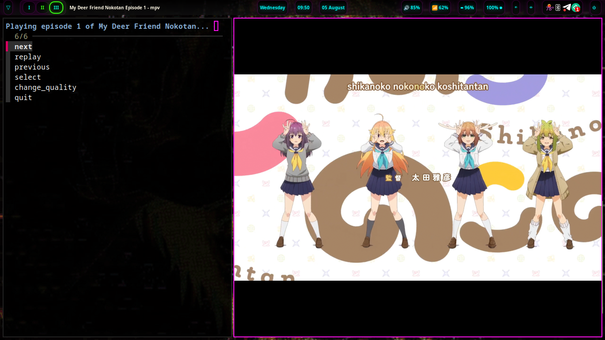

now | blog | wiki | recipes | bookmarks | contact | about | donate
* * * back home * * *
watch your favorite anime from the command line
2026-08-05

Recently, I was made aware of the ani-cli project, and so naturally, I had to check it out. I love anime, and this tool allows you to search for and watch anime right from your terminal.
I have been watching some of my favorite shows using this tool over the last few days and have been loving it. You simply call the tool from your terminal, and then search for the anime you'd like to watch, select it, and it is downloaded and shown to you in mpv, my favorite video player.
Installing ani-cli is quite easy. Use this to install it from source:
git clone "https://github.com/pystardust/ani-cli.git"
sudo cp ani-cli/ani-cli /usr/local/bin
rm -rf ani-cli
Now, you should be able to call it from your terminal by running ani-cli. Search for the anime you want to watch and select the correct title and episode when it shows up, and it will then be downloaded and displayed in mpv.
If you're like me and prefer to watch English dubs when they're available, you can also run ani-cli --dub and do the same. If available, you will get the English dub of the anime you're trying to watch. If one is not available, the tool will let you know so you can watch the sub instead if you'd like.
ani-cli is a great little TUI tool, and one I am going to be using quite frequently from now on for my wife and I to watch our favorite anime together and probably to discover new ones as well. I definitely recommend checking it out if you like anime, as well! Going forward, we will also be including the tool in naviOS so that it's available out of the gate for anyone that wants to use it on the distro without having to install it manually.